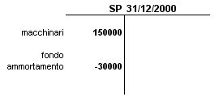
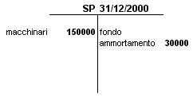
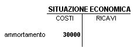
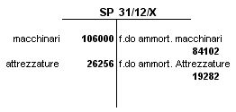
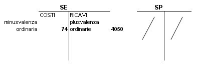
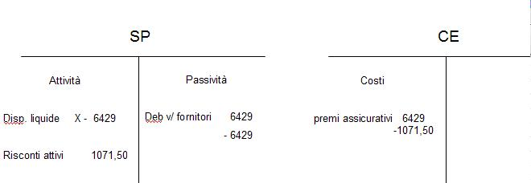

Torna alla pagina di Economia ed Organizzazione Aziendale
:: Economia ed Organizzazione Aziendale ::
Lezione 12/05/2008
Indice
Perché si utilizzano gli ammortamenti?
Gli ammortamenti(quota di competenza di un costo pluriennale) si utilizzano per soddisfare i principi contabili: PRINCIPIO DI COMPETENZA ECONOMICA, prevede che vengano inserite solo le quote di competenza, cioè gli ammortamenti.
Quali immobilizzazioni sono sottoposte ad ammortamento?
Per quanti anni si ammortizza un bene?
Per tutti gli anni che ho deciso nel piano di ammortamento tenendo conto di vari aspetti:
- senescenza: invecchia perché passa il tempo (invecchiamento fisico del bene)
- utilizzo: quanto invecchia tenendo conto dell'utilizzo (la domanda del bene ne influenza l'utilizzo)
- obsolescenza: bene che invecchia rispetto alla concorrenza di altri beni sul mercato (invecchiamento tecnologico)
⇓
In base a ciò decido il PERIODO DI AMMORTAMENTO, cioè per quanti anni dovrò ammortizzare il bene
Qual'è il valore da ammortizzare?
costo storico(valore della fattura del fornitore + oneri ed accessori direttamente imputabili al bene quali trasporto e imballo) - valore di recupero alla fine del periodo di utilizzo
Quali criteri per ripartire il valore da ammortizzare nel periodo di ammortamento?
- criteri aritmetici: con cui decido le quote di ammortamento cioè se:
⇒ dipendono dal ciclo di vita del prodotto
- criteri economici:
- criteri fiscali:
Come si inserisce il fondo ammortamento nello SP?
Ci sono due modi:
La Situazione Economica si presenta sempre con l'ammortamento nei costi, qualunque sia l'approccio seguito nello SP.
Esempio: Abbiamo una società SRL, il 10/1/2000 acquista un macchinario, pagamento in contanti 150000. Il bene ha una durata utile presunta di 5 anni.
Si imputa il costo di competenza a quote costanti, pari al 20%.
RICHIESTA:
SP, CE
SOLUZIONE:
Il debito contratto con il fornitore misura il costo storico. Il costo è pluriennale.
La quota di costo pluriennale di competenza dell'es. 2000:
Q.A. = 150000 * 0.2 = 30000
come già detto prima questo valore lo possiamo inserire nello SP in due modi:
1°MODO:

quindi in questo caso nella sezione attività si inserisce il costo storico e lo si diminuisce del fondo ammortamento.
2°MODO:

La situazione economica invece risulta essere(in quanto l'ammortamento si presenta sempre nei costi, qualunque sia l'approccio seguito nello SP):

Il valore contabile lo si ricava con COSTO PLURIENNALE - FONDO AMMORTAMENTO.
Al passare degli anni il valore contabile del bene diminuisce.
Quando si decide la dismissione di un bene si deve tenere conto del valore di recupero o realizzo.
Esso viene stimato al momento di inserimento del bene nel processo produttivo.
Ad esempio:
Se devo presentare un piano di ammortamento devo tenere conto del numero di anni di ammortamento, la quota annua, il valore del fondo, il valore contabile residuo (dato da costo storico - valore fondo)
Esempio: un'impresa a gennaio 2000 acquista macchinari al costo di 190000. Il valore di recupero stimato è nullo. Il periodo di utilizzo è 5 anni. Si ammortizza a quote costanti.
Presentare il piano di ammortamento.
In occasione della dismissione di un bene posso avere delle plusvalenze o delle minusvalenze.
Quali beni sono caratterizzati da plus e minus?
Praticamente qualunque tipo di bene a utilità pluriennale può generarle:
Come si calcola?Qual'è il valore da inserire nel bilancio?
Per ciascun bene minus/plus è dato dalla differenza tra:
valore di recupero(o di realizzo) - valore contabile(costo storico - fondo ammortamento).
Minus/plusvalenze sono valori economici(variazioni economiche) perciò si inseriscono nel CE.
Se:
In base al tipo di bene e soprattutto in base al suo utilizzo plus e minus hanno inserimento in sezioni diverse del CE:
1 Se il bene dismesso rientra nei beni utilizzati per svolgere la gestione caratteristica ho plus/minusvalenze ORDINARIE e si inseriscono rispettivamente:
2 Se il bene non rientra nella gestione caratteristica dell'azienda ho plus/minusvalenze STRAORDINARIE(date ad esempio da cessioni di immobili civili, rami d'azienda) e si inseriscono nel CE nella sezione OPERAZIONI STRAORDINARIE come COSTO(minus) o PROVENTO(plus) STRAORDINARIO.
Sia data una situazione patrimoniale in cui figurano i seguenti valori:

nei primi giorni dell'anno successivo vengono venduti i macchinari per 25948, le attrezzature vengono cedute per 6900.
RICHIESTA:
Calcolare componenti economici delle due dismissioni.
SOLUZIONE:
NOTA: si tratta di beni utilizzati in gestione caratteristica.
MACCHINARI:
valore di realizzo = 25948
valore contabile = 106000 - 84102 = 21898
si confrontano valore di realizzo e valore contabile:
V.R. > V.C. ⇒ V.R. - V.C. = 4050 PLUSVALENZA ORDINARIA(perché rientra nella cessione di un bene utilizzato nella gestione caratteristica). Quindi lo inseriamo nel conto economico, nel valore della produzione come altri proventi.
ATTREZZATURE:
valore di realizzo = 6900
valore contabile = 26256 - 19282 = 6974
si confrontano valore di realizzo e valore contabile:
V.C. > V.R. ⇒ V.C. - V.R. = 74 MINUSVALENZA ORDINARIA. Quindi la inseriamo nel conto economico, nei costi della produzione come altro oneri di gestione.

NOTA: Nella SP non c'è più nulla, perché i beni vengono dismessi.
Esercizio
Si acquista un macchinario per euro 150.000 con pagamento immediato.
La vita utile è di 5 anni e l'aliquota d'ammortamento a quote fisse
è apri al 20%. Al termine della vita utile si decide di vendere il macchinario al prezzo di 10.000 euro.
a) calcolare le quote di ammortamento
b) redigere SP e CE
Svolgimento
1/3/n1
Ora dobbiamo individuare quanto di 6429 è di competenza dell’esercizio n1
Premio annuale : mesi = quota di competenza : mesi di n1
Y= 6.429*10 / 12 = 5.357,5 COSTO DI COMPETENZA
Per individuare la quota di premio assicurativo non di competenza dell’ n1
6.429 : 12 = W : 2
Premio annuale : anno = quota non di competenza : mesi di n2
W = 6.429*2/12 = 1.071,50 QUOTA DI NON COMPETENZA
Riassumendo
In sede di chiusura di bilancio al 31/12/n1 avrò

Anno n2